2.1.2. Оценивание криптостойкости алгоритмов шифрования
2.1.2 Оценивание криптостойкости алгоритмов шифрования
При определении криптостойкости алгоритма шифрования, как правило, оцениваются три основных параметра − объем и вид исходных данных для проведения криптоанализа, вычислительная сложность и требование к объему памяти.
Объем исходных данных обычно выражается в количестве блоков данных для блочных шифров и в байтах для остальных шифров (поточных, асимметричных и др.). Вычислительная сложность проведения криптоанализа оценивается в единицах операций шифрования/расшифрования, требуемых для проведения криптоанализа. Сложность проведения любого метода криптоанализа для произвольного алгоритма можно представить в виде точки на плоскости, где одной из осей будет вычислительная сложность, а другой − количество требуемых исходных данных (рис. 2.1).
Перспективы и применимость любого метода криптоанализа удобно оценивать в сравнении с методом полного перебора, который теоретически способен гарантированно взломать любой шифр. Сложность метода полного перебора можно рассматривать как верхнюю границу сложности других методов криптоанализа. При этом, объем исходных данных, требуемых для полного перебора, обычно невелик − порядка нескольких десятков байт или 2−3 блока, а вычислительная сложность равна размерности пространства ключей, т. е. на рис. 2.1 метод полного перебора располагается почти на вертикальной оси.
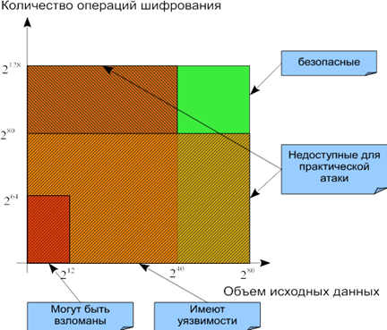
Рис. 2.1. Классы стойкости алгоритмов шифрования
Все алгоритмы шифрования и методы их криптоанализа, с точки зрения сложности их проведения, можно разделить на несколько групп:
− безопасные, недоступные для взлома (зеленая область);
− недоступные для практического взлома на современном этапе; это алгоритмы, криптоанализ которых имеет вычислительную сложность более чем 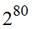операций шифрования или для которых необходимо более чем 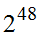 байт данных для анализа;
− имеющие уязвимости, т. е. имеющие вычислительную сложность 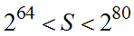 и требуемый объем исходных данных 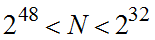; несмотря на то, что такая атака теоретически может быть реализована, в практическом криптоанализе такая атака будет малоэффективной и реализуемой не всегда, так как такие объемы исходных данных и вычислительные мощности далеко не всегда доступны на практике;
− доступные для практического взлома, с вычислительной сложностью менее 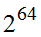 и объемом исходных данных менее  ; могут быть эффективно реализованы на практике.
; могут быть эффективно реализованы на практике.
Можно подумать, что с ростом мощности компьютеров разрядность ключа, достаточная для обеспечения безопасности информации против атаки методом полного перебора, будет неограниченно расти. Однако это не так. Существуют фундаментальные ограничения вычислительной мощности, наложенные структурой вселенной: например, скорость передачи любого сигнала не может превышать скорость распространения света в вакууме, а количество атомов во Вселенной (из которых, в конечном счете, состоят компьютеры) огромно, но конечно.
Предел, основанный на выделяемой Солнцем энергии
Все вычисления потребляют энергию. Согласно принципам классической термодинамики и статистической механики, потребление энергии при осуществлении необратимого преобразования (вычисления) имеет порядок 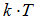, где T – температура окружающей среды (по абсолютной шкале Кельвина), а k – постоянная Больцмана (равная 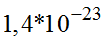 Дж/K). Мощность излучения Солнца составляет приблизительно 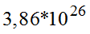 Вт; таким образом, за весь свой предполагаемый период существования – 10 млрд. лет, или 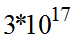 секунд – Солнце выделит около 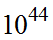 Дж. Предположим, температура окружающей среды 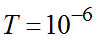 градусов, тогда энергозатраты на одну операцию составляют 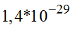 Дж. Значит, количество вычислительных операций, которые можно осуществить с использованием всей выделяемой Солнцем энергии, равно выделяемой мощности, поделенной на количество энергии, необходимой для осуществления одной операции, т. е. всего 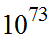 операций. Такое количество операций потребовалось бы на взлом ключа из 73 десятичных цифр (или около 250 бит) методом прямого перебора при грубом предположении, что для проверки одного значения ключа необходима всего одна операция (на самом деле − сотни операций). Для справки, количество атомов солнечной системы – около 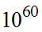.
Предел, основанный на массе Земли
Масса Земли составляет порядка 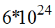 кг. Масса протона – 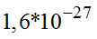 кг, т. е. Земля содержит приблизительно 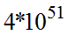 протонов. Сопоставим каждому протону отдельный компьютер и примем за скорость выполнения операции на таком компьютере время, за которое луч света проходит расстояние, равное диаметру этого протона (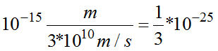 ).
Таким образом, каждый компьютер может выполнять 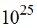 операций в секунду. Если все эти компьютеры будут работать параллельно, их суммарное быстродействие составит 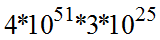 операций в секунду, т. е. 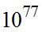 операций в секунду. Возраст Вселенной приблизительно 10 млрд. лет, т. е. секунд. За весь период существования Вселенной такие гипотетические компьютеры размером с протон смогли бы выполнить 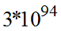 операций. При описанных предположениях относительно количества операций, необходимых на проверку значения ключа, такое количество операций позволит взломать ключ длиной 95 десятичных цифр, или 320 бит. Таким образом, минимальный размер ключа, необходимый для защиты информации от атак злоумышленника, будет расти по мере повышения быстродействия компьютеров; тем не менее, приведенные выше вычисления показывают, что существует возможность выбрать такую длину ключа, что атаку методом полного перебора будет осуществить в принципе невозможно, вне зависимости от повышения вычислительной мощности компьютеров или успехов в области классической теории алгоритмов [26].
Задачу обеспечения криптостойкости алгоритма шифрования можно рассматривать с разных точек зрения. Можно выделить несколько необходимых, но недостаточных принципов проектирования алгоритмов шифрования:
− принцип Кергофа, согласно которому криптостойкость алгоритма шифрования не должна зависеть от хранения в секрете самого алгоритма, а должна быть основана только на знании секретного ключа;
− достаточный размер секретного ключа, должен обеспечивать сложность перебора не менее чем 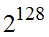 (некоторые криптографы рекомендуют уже сегодня использовать ключи длиной не менее 160 бит);
− использование проверенных структурных элементов (подстановок и перестановок), имеющих хорошие характеристики;
− использование надежной структуры шифра, выполнение проверки криптостойкости шифра с помощью существующих методов криптоанализа.
Для асимметричных криптосистем характерно использование в составе алгоритма шифрования некоторой сложно разрешимой проблемы из теории чисел. Таким образом, вскрытие алгоритма шифрования становится эквивалентным решению этой сложной проблемы. Из таких сложных проблем можно назвать задачу факторизации (разложение больших чисел на простые множители), дискретное логарифмирование, извлечение квадратного корня по большому модулю специального вида, логарифмирование в поле точек эллиптической кривой.
Другим путем увеличения стойкости к взлому является использование сложной структуры алгоритма, обеспечивающей высокую степень перемешивания и рассеивания, лавинного эффекта, высоко-нелинейных операций и итерационной структуры алгоритма шифрования. Третьим вариантом является затруднение, для криптоаналитика, получения требуемого количества исходных данных для анализа.